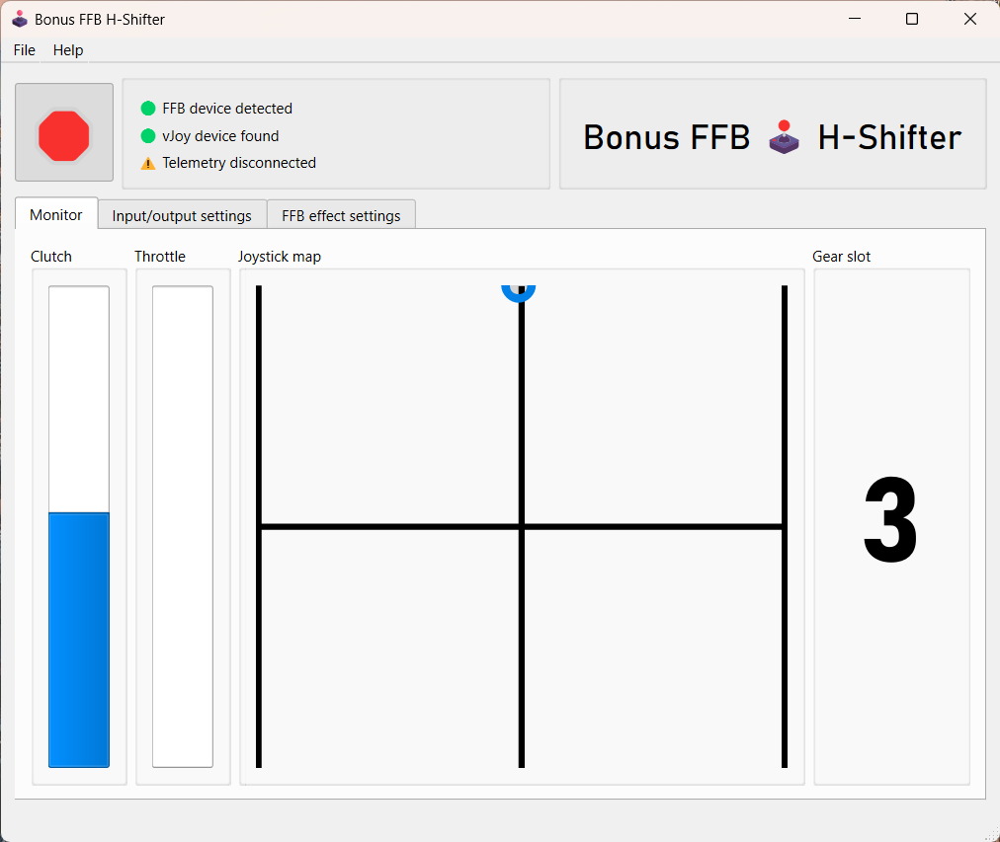
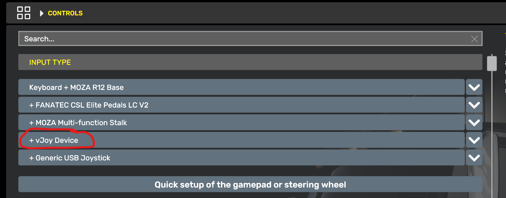
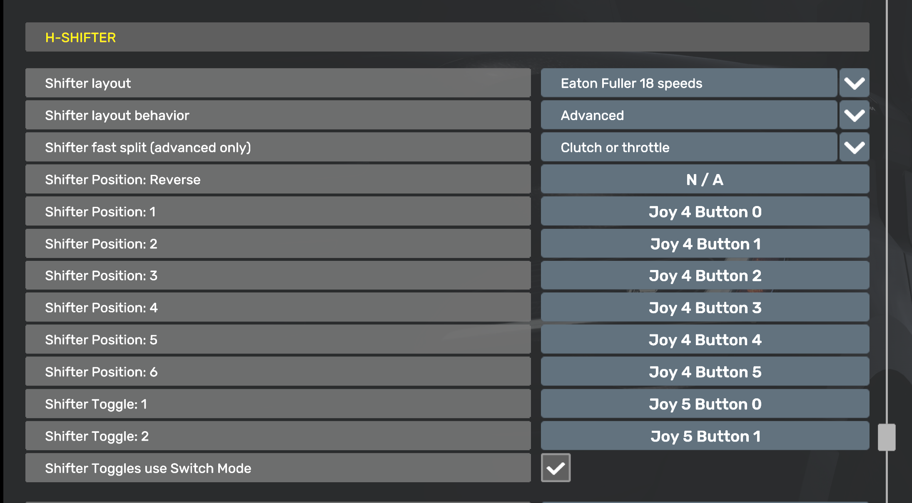

H-Shifter
This application simulates an H-pattern shifter with gear grinding, locking, and float shifting. Configuring clutch and throttle pedals axes in the Input/output settings tab is required. Float shifting requires setting up game telemetry.
H-Shifter is best suited to casual driving games, such truck, bus, and taxi sims. Depending on the strength of your FFB joystick, it's possible to overcome the locking, grinding, and channel-keeping force effects. Remember to play along and not push through these effects. If you want something stronger and more precise, consider a purpose-built device like the Bash Pro.

Features
When not using telemetry, you must depress the clutch to change gears.
When using telemetry, you may depress the clutch to change gears, or you can float-shift. How this is done varies by game:
- In ATS/ETS2, a button press is sent when the shifter is slotted, but before it's fully engaged. The game will decide whether the button press results in an invalid shift, resulting in a grinding effect, or a valid shift, resulting in a successful gear change.
- The grind effect feels rather natural in H-Shifter's feedback, but successfully float shifting can feel like the shifter is being forced into gear. Unfortunately this is currently the only reliable way to simulate float shifting with the telemetry values currently available in ATS/ETS2.
When the throttle is engaged and the clutch is not, the shift lever will be locked in gear. You must release the throttle or depress the clutch in order to disengage the shifter.
Game configuration
H-Shifter sends vJoy button presses when gears are engaged. Bind the in-game gear slots as you would with a hardware H-pattern shifter, by walking through the gears slot-by-slot in the game control settings. The input device will show up as the vJoy device you selected in H-Shifter's input/output settings.
ATS/ETS2 settings
Set these values in the "Controls" menu.
- In the
Input Typeslist, add the vJoy Device
- Set
TransmissiontoH-Shifter - Set
Acceleration axis deadzoneto 1%- This is recommended to reduce thrashing of the locked-in-gear effect
- Set
Clutch axis deadzoneto 1-5%- This is strongly recommended to smooth out clutch-enabled FFB effects
- Set
Clutch rangeas desired, ~75% is recommended- Setting the clutch range too high will make shifting into gears unrealistic
- Set
Shifter layoutto match the vehicle's transmission, e.g., Eaton-Fuller 18 speed - Set
Shifter layout behaviortoAdvanced - Set
Shifter Positions1-6 to the vJoy Device buttons 0-5, corresponding to the H-Shifter slots- Ignore the
Reverseposition, it's not used when theShifter layoutmatches a real transmission
- Ignore the

(Your device number will be different than in the above screenshot)FFB effect descriptions
Grind effect RPM
This effect occurs when attempting to shift into gear without the clutch depressed or the transmission synchronized.
When not using telemetry, this value is used for the revolutions per minute of the effect.
When using telemetry this setting is not used, the grind effect uses the engine RPM instead.
Idle in-gear lock intensity
This is the spring force applied to the shift lever to keep the shifter engaged in the slot when the throttle is not applied. Think of it as the minimum amount of force you need to pull the shifter out of gear when not depressing the clutch pedal.